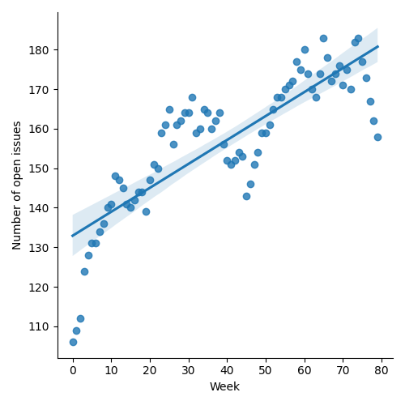
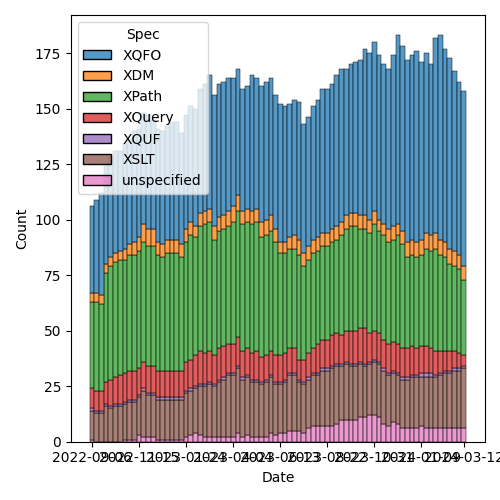
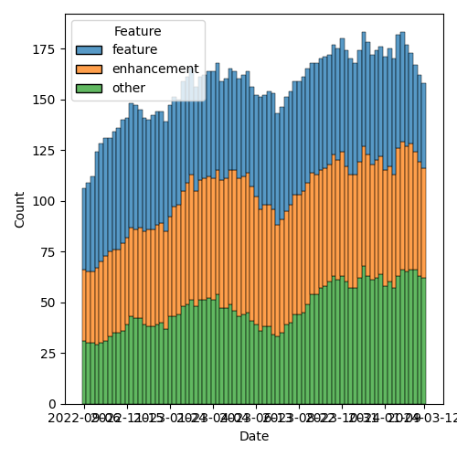

QT4 CG Meeting 070 Minutes 2024-03-19
Table of Contents
Meeting index / QT4CG.org / Dashboard / GH Issues / GH Pull Requests
Draft Minutes
Summary of new and continuing actions [0/6]
[ ]QT4CG-063-04: NW to try to add test review to the editorial meeting.[ ]QT4CG-063-06: MK to consider refactoring the declare item type syntax to something like declare record[ ]QT4CG-064-08: NW to open an issue to try to resolve $search to $target consistently.[-]QT4CG-069-02: NW to coordinate with MK to use the introspection features on the test suite.- In progress…
[ ]QT4CG-070-01: NW to review how records are formatted.[ ]QT4CG-070-02: MK to raise the line separators issue in parse-csv.
1. Administrivia
1.1. Roll call [14/15]
[X]Reece Dunn (RD)[X]Sasha Firsov (SF)[X]Mukul Gandhi (MG)[X]Christian Grün (CG)[X]Joel Kalvesmaki (JK)[X]Michael Kay (MK)[X]Juri Leino (JLO)[X]John Lumley (JLY)[X]Dimitre Novatchev (DN)[X]Matt Patterson (MP)[X]Wendell Piez (WP)[X]Ed Porter (EP)[X]Liam Quin (LQ)[ ]Adam Retter (AR)[X]C. M. Sperberg-McQueen (MSM)[X]Norm Tovey-Walsh (NW). Scribe. Chair.
1.2. Accept the agenda
Proposal: Accept the agenda.
1.2.1. Status so far…

Figure 1: “Burn down” chart on open issues

Figure 2: Open issues by specification

Figure 3: Open issues by type
1.3. Approve minutes of the previous meeting
Proposal: Accept the minutes of the previous meeting.
Accepted.
1.4. Next meeting
The next meeting is scheduled for Tuesday, 26 March 2024.
Any regrets for the next meeting?
None heard.
1.5. Review of open action items [8/12]
[X]QT4CG-052-02: NW to consider how to schedule an “editor’s meeting”- Proposed: next Tuesday at 15:00GMT (16:00CET, 11:00EDT)
[ ]QT4CG-063-04: NW to try to add test review to the editorial meeting.[ ]QT4CG-063-06: MK to consider refactoring the declare item type syntax to something like declare record[ ]QT4CG-064-08: NW to open an issue to try to resolve $search to $target consistently.[X]QT4CG-069-01: MK to list the remaining issues that need discussion.- MK: I’ve been doing a lot of work going through the PRs (open and closed) to check that there are tests tagged against each PR or are clearly marked as not having tests.
[-]QT4CG-069-02: NW to coordinate with MK to use the introspection features on the test suite.- In progress…
1.6. Review of open pull requests and issues
1.6.1. Blocked
1.6.2. Merge without discussion
The following PRs are editorial, small, or otherwise appeared to be uncontroversial when the agenda was prepared. The chairs propose that these can be merged without discussion. If you think discussion is necessary, please say so.
- PR #1090: 1089 Add rounding rules for casting string to duration etc
- PR #1083: 1079 Change book used in example
- PR #1081: 1050 Fix ItemType grammar ambiguity
- PR #1080: 1036 Rephrase the rules for number-parser with liberal JSON
- PR #1073: XQFO (editorial)
- PR #1072: 883 Return type of load-xquery-module
Proposal: merge these PRs without discussion.
Accepted.
1.6.3. Close without action
It has been proposed that the following issues be closed without action. If you think discussion is necessary, please say so.
- Issue #757: Function families
- Issue #463: fn:parts() - extract the parts of a (not-really) atomic value
- Issue #448: Support extended dateTime formats of ISO-8601:2019?
- Issue #283: Enumeration types
- Issue #218: Function library for maps with composite keys: and thoughts on encapsulation
- Issue #119: Allow a map's key value to be any sequence
- Issue #33: JSON Parsing & Serialization: Numbers
Proposal: close these issues without further action.
Accepted.
2. Technical Agenda
This agenda is the unfinished items from last week with “1077” slotted into the middle. If we get through all of these in less than an hour, we’ll look for some easy things.
2.1. Brief demo
SF gave a brief demo of a web component that contains XSLT.
- SF: The XSLT elements are “foreign elements” that are blended in without an XSL namespace.
- … Current plans are to use XSLT 1.0 because that’s what the browser supports
- … Future plans to upgrade to XSLT 3.x or 4.x
- … Uses JavaScript
??convention to support defaults
- SF: Managing the syntax highlighting in the IDE is tricky; help solicited.
- SF: Fate of XHTML is unclear at the moment.
Work is going on in the Web Components Community Group at the W3C.
SF’s demo is online here: https://unpkg.com/@epa-wg/custom-element@0.0.17/demo/dom-merge.html
2.2. PR #1066: 1052 Simplify the results of parse-csv
See PR #1066
MK introduces the PR.
- MK: The attempt here was to simplify what the
fn:parse-csvfunction returns, but along the way there were other edge cases.- … The interface to
fn:parse-csvhas changed quite a bit - … Changes to the description of
fn:csv-to-xmlis mostly editorial.
- … The interface to
- MK describes the changes to end-of-line normalization
MK observes that we currently describe options in a tabular structure. We should do it with records, but that should be done globally, not just in this function.
- MK: Attempted to shorten the examples so that they’re easier to read.
MK describes the changes to fn:parse-csv.
- MK: Changed to deliver a single record with four fields; the same information
but packaged differently.
- … There’s a
getfunction on the content as a whole were you can supply a row/column.
- … There’s a
- JLY: I first read that as the
asis not properly formatted.
ACTION: QT4CG-070-01: NW to review how records are formatted.
MK describes the changes to the options.
- MK: Function specification is now organized around the different options.
- … The error conditions have changed a little bit.
- MK: The examples have been reworked to simplify their presentation.
- … Each example now fits on one screen
- CG: I like all the changes; I’ve given feedback in the issues.
- … My main concern is handling of new lines. In XML, carriage returns are simply discarded. Just recently, I’ve seen test cases for XQuery 1.0 that discard carriage returns and normalize newlines.
- … At the moment, it’s actually difficult to get carriage returns into the data.
- … Looking at other libraries, it’s hard to see that these options are really necessary.
- … I’d really like to have this on a global level; it will be important to define serialization with respect to newlines.
- MP: If you export a CSV from Excel today, it is CR/LF by default even on a
Mac. I don’t think we can ignore that.
- … Except in certain use cases, there will almost always be CR/LF line ends.
- CG: But how do we get it into our language at all? Using
unparsed-textnormalizes line ends.
Some discussion of the changes to unparsed-text to normalize newlines.
Some discussion of normalization of line endings in quoted strings.
- MP: I worry that that’s a breaking implementation thing. If you know that CR has a special meaning in a field, losing it could be problematic.
- CG: The specification should describe how we get this data. I think we should
do this more globally, for example allowing to specify line termination in
unparsed-text. - MP: The reason we have it specially here is because that’s a feature of almost
all the CSV libraries.
- … If Python have gotten away without changing the terminator, then maybe we could do that too.
- MP: Serialization is a different matter. But even in the Python situation, it’s important to note that they “do the right thing” with different line endings.
- CG: I think we need ways to normalize, but I don’t think it should be in CSV. It’s not special to CSV.
- MP: It’s in the CSV section because of the poor quality of the CSV specification.
- … If we think we can avoid that complexity, then I don’t mind doing that.
- MK: I think it’s safer to keep the capability in.
- MP: I think normalization will probably have to be enabled by default.
- CG: Our CSV library has normalized line ends for 10 years and no one has ever asked for options to deal with that.
- MP: Anecdotally, I expect your users have more regular data than the sorts of
random CSVs you find if you’re doing ad hoc processing.
- … In my experience, so much of the data has weird idiosyncrasies.
Some discussion of where this might occur.
- MK: I wonder if we can step back. Are there any bigger issues?
- MP: I think that’s maybe the biggest issue.
- … I worry a little bit about returning strings rather than arrays of strings in parse-csv, but if everyone else is happy, then that’s fine.
- MK: I think the sequences of array model works pretty well.
- MP: Having to specify a 45 item sequence to get the 45th column seems harder than constructing a map with 3 entries. But it’s not the end of the world.
- JLO: Interesting so far. I’m wondering why we can’t choose a different row terminator. It might not be a new line, it might be a null or some other character.
- MK: It can be any single character.
MK reviews how you can approach the line ending normalization problem.
- JLO: In the examples, there’s a very long
instance ofexpression. Simplifying that would make it more readable. - MK: I can do that.
ACTION: QT4CG-070-02: MK to raise the line separators issue.
Proposal: accept this PR.
Accepted.
2.3. PR #1059: 1019 XQFO: Unknown option parameters
See PR #1059
CG reviews where we are and how we got here.
- CG: We could also add an option to decide if unknown options are an error.
- MK: Should we categorize this as a “plausibility error”. It says the implementation can say this is probably wrong but it doesn’t have to.
- CG: How does this work?
- MK: They’re typically type checking at the moment. Some of these you might be
able to detect statically.
- … Going back a bit to the 1.0 concept of a recoverable error. It’s defined to be an error but the implementation isn’t required to report it.
- NW: I’m confused by the prose, it seems to suggest a different namespace but still require an error.
- CG: Yes, perhaps that’s not really clarified yet.
- NW: In XProc, we said extension options have to be in a namespace and implementations are free to ignore them. That’s worked well for us.
- MK: I think that’s a good policy.
- MSM: I’m a little torn because I like two things that are incompatible.
Sometimes, I really do want the ability to say, please go through this entire
code base and tell me if there are any options you don’t understand. So I like
the ability to raise an error, even for things in a different namespace. On
the other hand, I think if processors are required to raise an error every
time they see an extension for another processor, that is problematic.
- … I have a highly developed fear of being lumped into a single implementation.
- … I like having an option and I would like two flavors.
Ran out of time. NW suggests CG redraft it and see if we can get consensus to merge without further review.
3. Any other business
None heard.